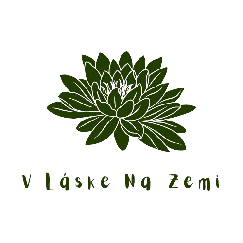
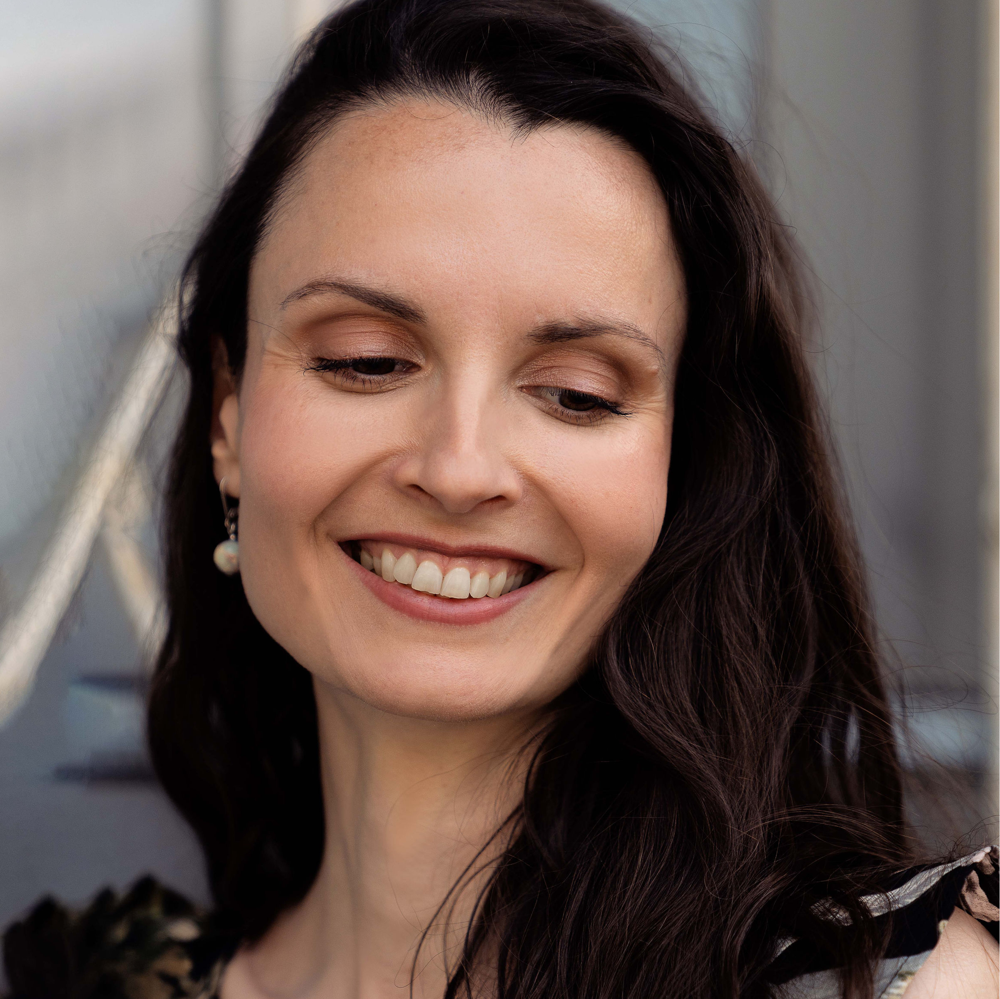

Jmenuji se Zuzana. Jsem žena, matka a průvodkyně na cestě k hlubokému sebepoznání, léčení a skutečnému duchovnímu naplnění.
Miluji jógu, tanec, přírodu a krásu všeho druhu. Fascinují mě hloubky lidské psychiky a spirituální roviny našeho bytí a hledám způsoby, jak je propojovat s materiálním světem tak, aby se navzájem podporovaly a vznikal harmonický celek.
V době narození mého druhého syna jsem začala procházet hlubokým probuzením a vlastní vnitřní transformací. Během následujících let jsem si prošla vyhořením, rozpadlo se mi manželství a vůbec můj život takový, jaký jsem ho do té doby znala. Byla jsem nucena procítit množství těžkých emocí, kterým jsem se předtím vyhýbala, a přehodnotit svůj přístup k sobě samé i k životu jako takovému. Přiznat si, kde jsem nežila opravdu v souladu se svou pravdou. Začít přijímat všechny své dlouho potlačované části, snažit se je pochopit a integrovat.
Během tohoto svého procesu jsem hledala pomoc a vyzkoušela různé metody vnitřního léčení, seberozvoje, vědomé manifestace... Jako nejefektivnější a nejkomplexnější se mi ukázala metoda Cesta. Díky ní jsem si jasněji uvědomila a zpracovala traumata ze svého dětství i z hlubší minulosti své duše. Pochopila jsem množství karmických souvislostí. Objevila jsem negativní přesvědčení, která nenápadně ovlivňovala mou realitu, aniž bych si to uvědomovala. Došlo mi, že ten starý život se rozsypal, protože nebyl v souladu s tím, kdo opravdu jsem.
Začala jsem intenzivněji vnímat a chápat své tělo, své srdce i svou mysl. Napojila jsem se pevněji na své vnitřní vedení. Ukázalo se mi, jak jsem toto napojení ztrácela a také jak ho znovu získat. Laskavě, s pochopením, přijetím, odpuštěním. Změnila jsem přístup ke své jógové praxi. A asi to úplně nejkrásnější – naučila jsem se zažívat samu sebe ve své nejčistší podobě, jako neoddělitelnou součást Zdroje tohoto života – nekonečné energie, lásky a vědomí.
Metodu Cesta vyvinula světově uznávaná terapeutka, učitelka a autorka knih Brandon Bays. Vznikla na základě její vlastní životní zkušenosti, kdy se jí podařilo během 7 týdnů vyléčit nádor velký jako basketbalový míč. Svůj příběh popisuje v knize Cesta (The Journey). Je to jednoduchá, ale velmi účinná technika založená na uvolnění emocionálních zranění a spuštění samoléčebného procesu v těle.
Je vědecky potvrzeno, že emoce vyvolávají v našem těle biochemické reakce. Při jejich potlačení dochází k zablokování buněčných receptorů, čímž se naruší zdravá komunikace mezi buňkami. V těle tak vzniká porucha, která je nejdříve skrytá, ale postupem času může přerůst v onemocnění právě v místě těchto zablokovaných buněčných receptorů. Velká část těchto zablokování vzniká už v raném dětství a projevuje se jednak sklonem k určitým zdravotním problémům, tak i negativním psychickým naprogramováním – z nezpracovaných traumatických zážitků si odnášíme různé závěry a přesvědčení, která pak brání přirozenému toku našeho života a naplnění našeho potenciálu.
Během sezení dochází k opětovnému plnému prožití a uvolnění potlačených emocí a odhalení souvisejících buněčných vzpomínek, které jsou příčinou klientových potíží. Tyto vzpomínky se zpracují tak, aby došlo k vnitřnímu smíření a odpuštění. Klient zároveň najde cestu k hlubokému vnitřnímu zážitku míru, jednoty, lásky a naplnění.
Svým klientům nabízím především bezpečný prostor, kde je možné se uvolnit, důvěřovat a otevřít se vnitřnímu poznávacímu a transformačnímu procesu. Využívám metodu Cesta a zkušenosti z celoživotní jógové praxe.
Co vám pomohu dosáhnout:
Jedno plné sezení trvá cca 3 hodiny a jeho cena je 4 500 Kč. Prvnímu sezení předchází krátký bezplatný videohovor, během kterého se seznámíme a bude prostor pro vaše dotazy. Samotné sezení probíhá zpravidla online, v případě potřeby je možné osobní setkání v Praze. Kratší doplňkové procesy a online konzultace 1 500 Kč/hod.
“…Je úžasné vnímať podporu, vedenie a bezpečie od tak empatického človeka. Zuzka má dar človeku otvoriť jeho skryté tiene, presvetliť a vytiahnuť ich na povrch . Áno, je to boľavé, ale nesmierne liečivé....“ - Janka
„... Byla jsem nucena opustit společné bydlení s manželem, zůstala jsem sama se svými 2 dětmi, měla jsem problémy s chůzí... Zuzka mě provedla svojí Cestou a velmi se mi ulevilo. Byla průvodkyní na mé vnitřní cestě k pochopení mé situace a následcích, které se mi staly…“ - Hanka
„… Díky projekci a cestě kterou jsme spolu podnikly jsem si uvědomila své osobní vnitřní dítě, které mi do dnes v některých těžkých chvílích pomáhá připomenout, abych na sebe byla hodná…“ - Terezka
„... Její laskavé a trpělivé vedení mi umožnilo se beze strachu podívat na to, co je uloženo hluboko uvnitř mě a tzv. si posvítit na to, z čeho nevědomě funguji. Díky Zuzce jsem pak byla schopná definovat si nové pro mě prospěšné vzorce …“ - Natália
„U Zuzky jsem absolvovala několik sezení. Vše bylo milé a profesionální, a ačkoliv jsme se při nich dostaly do velkých hloubek, celou dobu jsem vnímala, že jsem v dobrých rukou a v bezpečném prostoru…“ - Katka
“… Překvapilo mě, jakou úlevu jsem po terapii cítila. Je to už týden a stále v sobě vnímám klid a vnitřní pohodu ohledně situace, kterou jsem řešila. …” - Lenka